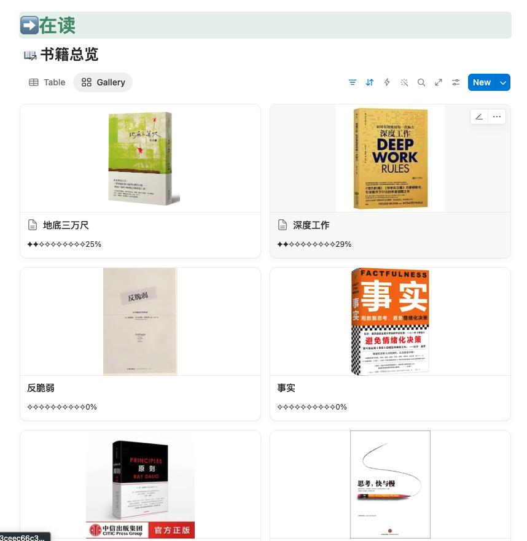
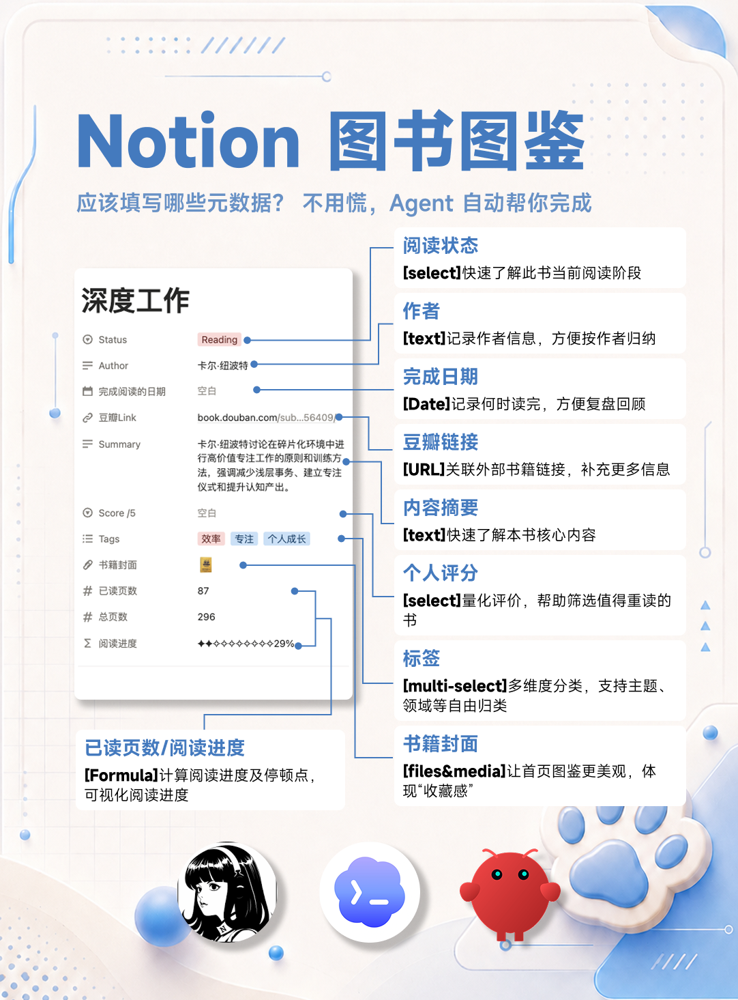
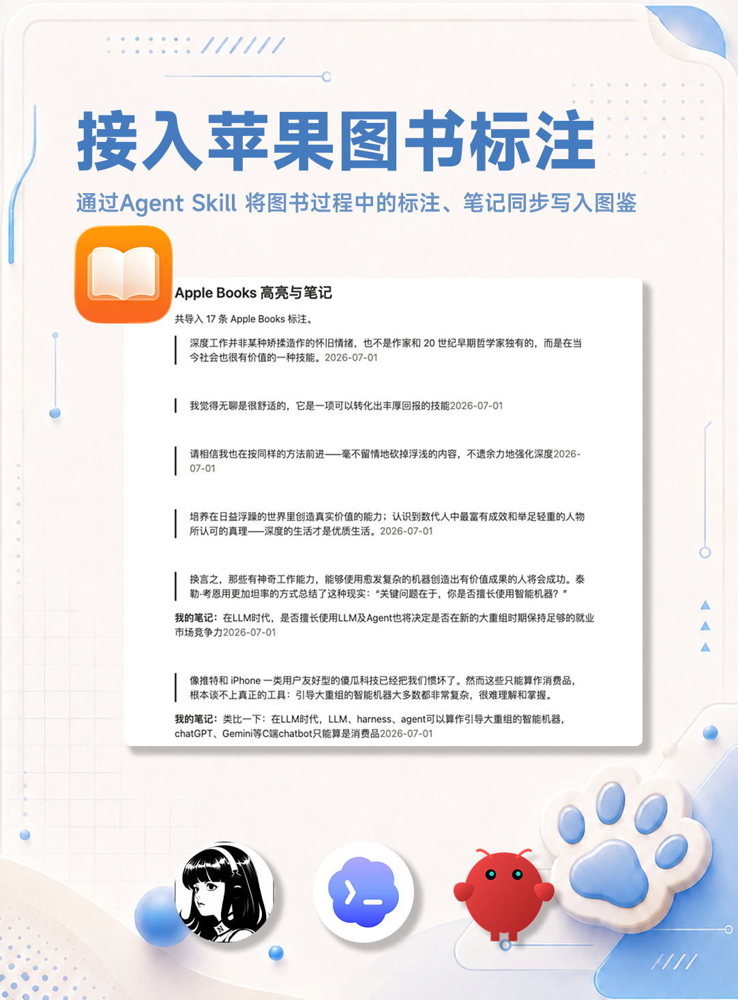

Notion Book Completer
把阅读数据库从“手动维护的模板”，升级成“会持续帮你补全、校验、同步的 Agent Skill”。

读书模板好看，但维护很磨人
真正费时间的不是建一个 Notion 页面，而是让每本书长期保持“有信息、能回顾、不会乱”。
字段太多
作者、状态、页数、封面、摘要、标签、豆瓣链接……每本书都要重复补一遍。
数据不可靠
封面链接会失效，页数版本不同，摘要容易复制太长，最后数据库越来越脏。
笔记散落
Apple Books 的高亮、自己的批注、Notion 读书笔记分散在不同地方，复盘时找不到上下文。
它不是模板，是阅读数据库管家
Notion Book Completer 会连接你的 Notion Reading 数据库，执行初始化、校验、补全、导入与去重。
把“维护动作”封装成可重复调用的能力
你只要说“添加这些书”“补全缺失信息”“导入 Apple Books 标注”，skill 会按既定规则检查 Notion、读取本地数据、写回正确位置。
首次设置
创建 Reading 页面、书籍总览数据库、视图与标准字段。
添加书籍
批量创建或匹配已有条目，避免重复页面。
补全空字段
查找作者、摘要、标签、总页数、封面、外部链接。
导入标注
把 Apple Books 高亮与“我的笔记”同步到对应书籍页面。
图书图鉴：字段让阅读轨迹可见
参考你已有的 Notion 图书页，skill 会围绕这些核心字段建立和维护数据结构。

阅读状态
Reading、To read、Done 等阶段，让当前阅读任务一眼可见。
作者与外链
记录作者、豆瓣或其他书籍链接，方便继续查证。
摘要与标签
给未来的自己留下“为什么值得读”的简短线索。
页数与进度
通过已读页数、总页数和公式字段可视化进度。
评分与完成日期
支持复盘筛选，但不会替你随便填写主观评价。
书籍封面
写入前校验图片 URL，避免首页图鉴变成坏图。
只补空缺，不覆盖你的判断
这是这个 skill 最重要的边界：自动化负责繁琐信息，你保留阅读记录的主权。
它会做
仅填写空字段或明确损坏的内容，例如缺失作者、摘要、标签、总页数、封面 URL。
它不会做
不会覆盖你的评分、阅读状态、进度、日期、笔记、标签和已经写好的摘要。
它会验证
封面链接必须可访问、返回图片内容且不是空响应，才会写入 Notion。
它会去重
添加书籍前查已有页面，导入 Apple Books 前比较已存在 quote，避免重复导入。
把高亮和“我的笔记”带回书籍页
macOS 上可以读取 Apple Books 本地数据库，把标注同步进对应 Notion 书籍页面。

新建或定位模块：
Apple Books 高亮与笔记
高亮内容写成 quote block，保留阅读时的原句上下文。
个人批注单独成段，只加粗“我的笔记：”，保持你习惯的格式。
重复执行时只追加新标注，不重新污染已有笔记。
一个阅读系统，多个 Agent 都能接上
它被设计成可复用的个人技能包，而不是只在某一次对话里跑通的脚本。
通过本地 skill 调用，适合在当前工作区持续维护 Notion Reading 数据库。
openai.yaml保留独立 metadata 与调用名，让同一套能力能迁移到另一个 Agent 环境。
hermes.yaml支持作为本地 skill 安装，兼顾 macOS 与 Windows 的路径和配置差异。
openclaw.yaml一句话触发一条维护流程
最好的体验是：你不用记字段结构，只要描述阅读动作，skill 负责把动作落到 Notion 数据库。
连接
读取 .env 或本地配置，找到 Reading 数据库。
校验
检查字段、视图、数据源 API 版本是否可用。
匹配
先查已有书籍，避免重复创建页面。
补全
只写入缺失且已验证的信息。
回报
用中文说明新增、跳过、修复和仍需你判断的内容。
一次真实执行：添加《如何生活》
从一句自然语言请求开始，Agent 完成版本匹配、字段补全、封面校验、Notion 写入与回读确认。
如何生活
德里克·西弗斯
To read list识别请求并查重
保留用户指定书名，定位书籍总览；确认没有同名记录后创建新页面。
匹配书籍版本
用 How to Live + Derek Sivers 命中豆瓣原版条目，核对作者、链接、标签与 115 页版本。
筛选并验证封面
排除占位图与配额路径，选择稳定零售商 CDN；连续两次确认 JPEG、HTTP 200 与真实文件签名。
写入后回读验收
状态、0 页进度、作者、标签、摘要、豆瓣链接、页数和封面齐全，三个笔记模块同步创建。
让阅读记录变成会自己长出来的系统
Notion 负责承载结构，Agent Skill 负责执行维护动作；你负责真正读书、判断、回顾。